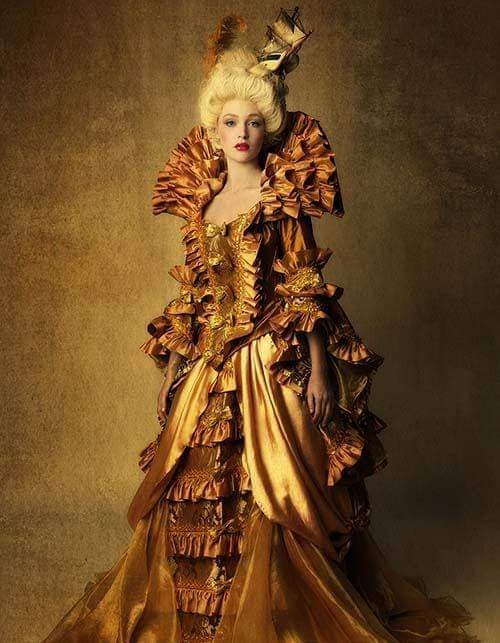
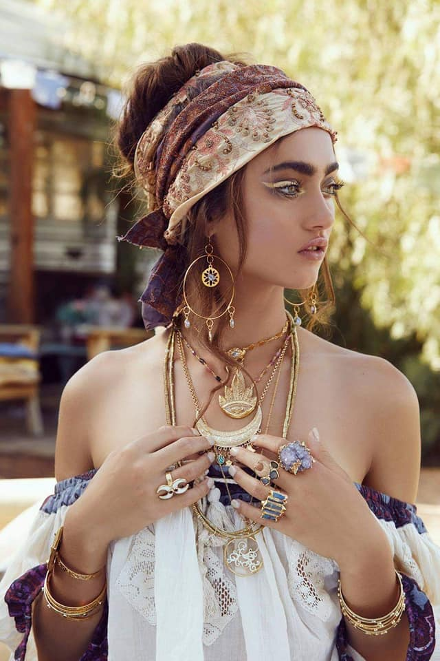
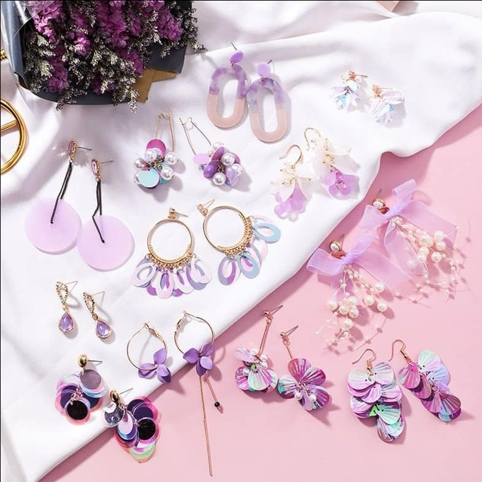

Nhiệt Tình Và Chân Thành Phục Vụ
ĐẠI SIÊU THỊ RISA EARRING
Đến với Risa Earring bạn sẽ tìm được vô số mặc hàng mới lạ, độc đáo. Đặc biệt là mặt hàng khuyên tai cá tính, móc vành, khuyên môi,... Với đội ngũ tư vấn tuyệt vời, giao hàng nhanh chóng, hàng chất lượng cao. Hãy yên tâm mua sắm tại Risa Earring nhé
ROCOCO
Người quan trọng nhất thiết lập nên "Phong cách thời trang Rococo"là Madame de Pompadour. Nhưng người tiên phong khởi tạo xu hướng này là hoàng hậu Marie Antoinette.Trang phục của những quý cô chính là những chiếc váy lót bên dưới có khung đỡ giúp làm phồng váy, cổ áo sâu, váy thường được mở ở phía trước. Phần tay áo ôm và xòe rộng với ren hoặc ruy-băng loe ra ở cổ tay.
BOHEMIAN
"Bohemian" - "Phong Cách Du Mục" ám chỉ người dân du mục sống lang bạt ở Châu Âu. Họ đi nhiều nơi, rong đuổi khắp đất trời Châu Âu với lối sống phóng khoáng, tự lo, không vật chất và đi ngược lại với định kiến ràng buộc của xã hội. Đặc biệt, họ luôn mang trên người những trang phục thoải mái, không gò bó, TỰ DO và có phần HOANG DÃ như chính con người của họ. Cũng từ đó, BOHEMIAN đã lan rộng ra khắp mọi miền
EARRING
Đến với "Risa Earring" bạn sẽ được: Tư vấn MIỄN PHÍ về những vấn đề liên quan đến chuyện làm đẹp nà. Tha hồ lựa chọn các kiểu dáng KHUYÊN TAI mà bạn YÊU THÍCH. Đừng lo về GIÁ khi đến với "Risa Earring" nhé !!! Mọi thứ đều rất TUYỆT VỜI. Tốc độ giao hàng sẽ là NHANH NHẤT có thể ♥️ "Risa Earring chân thành, nhiệt tình, hoan nghênh mọi người. Vì khách hàng là Thượng đế mà 🌞 "